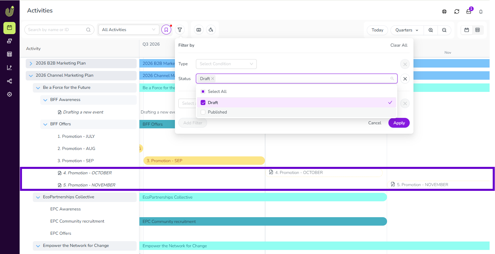
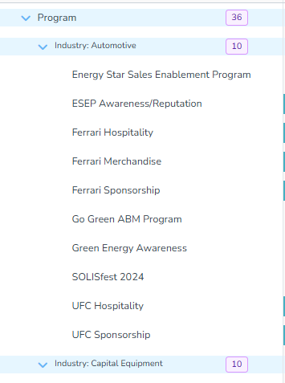
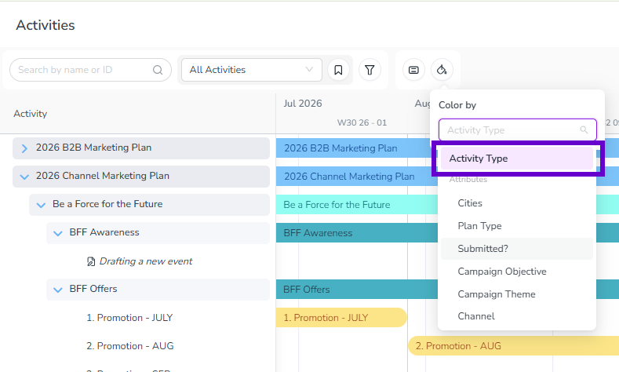

What's new: 2026.8
Discover all the new Uptempo features introduced with the 2026.8 release, available from August 26, 2026.
Campaign Management: Activities
Save activities as drafts
You can now save a new activity with just a Name, Activity type, and Parent, then fill in the rest of its details and publish it whenever you're ready; you no longer need every required field complete up front to create an activity.
Start now, finish later: Save an activity as a draft at any point during creation (other than the Budget step, once it's connected to spend), then return anytime to complete its remaining details and publish it.
Required fields stay flexible until you publish: While an activity is a draft, required fields are softly enforced, so you can save without completing them. When you're ready to publish, Uptempo validates the activity and highlights anything still missing.
Tell drafts apart and filter by status: Draft activities show a drafts icon in the hierarchy and an outlined Timeline bar instead of a solid one. Use the Status filter to show only drafts or only published activities.
No spend connections until published: You can enter Estimated Costs on a draft, but you can't connect it to a Line Item or Category/Sub-Category until all required fields are complete and the activity is published.
{kind=link}

Group activities by up to three dimensions
You can now group activities in the activity hierarchy by up to three dimensions at once, including by Activity Type for the first time, making it faster to scan large marketing plans without repeated filtering.
See activity types at a glance: Activity Type is now available as a Group By dimension, so you no longer need to filter by one type at a time or repeat the type name in every activity's title to tell them apart.
Combine up to three dimensions: Select up to three Group By dimensions at once (for example Activity Type, Industry, and Product Line), and drag to reorder them to control how the resulting groups nest.
See group sizes without expanding: Every group now shows a badge with the number of activities directly in it, in both Timeline and Summary display modes.
You can group by up to three dimensions at a time; grouping by more than three isn't supported.
{kind=link}

Get one clear way to color-code activities by type
Color-coding activities by type on the Timeline is simpler now: the redundant Activity Type Group option is gone from the Color by menu, and Activity Type is the only and default way to color-code by type.
If you or your team had a view or session set to Activity Type Group, it now uses Activity Type automatically. No action is needed.
{kind=link}
